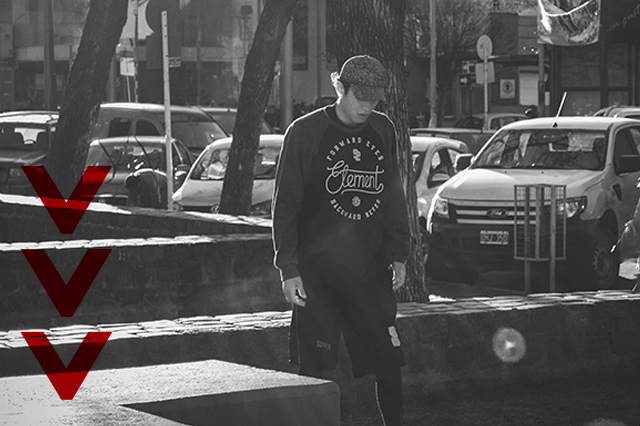

Estas son las preguntas o dudas más comunes que tiene la gente en cuanto a esta disciplina, además se explican conceptos utilizados en la misma que no todo el mundo conoce, pero los practicantes de la misma sí.
El Parkour, es una disciplina física basada en la capacidad motriz del individuo para superar un recorrido en el menor tiempo posible.
Esta disciplina surge en la década de los 80 en Francia, el primer grupo del que se tiene registro es el de los "Yamakashi", un grupo de jóvenes que entrenaban en las ciudades de Francia. Este grupo estaba integrado por el actor David Belle, que más adelante actuaría en la película nombrada como su grupo.
El parkour tanto en nuestra ciudad, como en el mundo se ha instaurado con unos valores de compañerismo, donde el cuidar al otro, el parar el entrenamiento si alguno se cae, la auto superación, están presentes. Sin importar las diferencias si alguien se golpea todos corren al hospital para ayudarlo.
Es importante saber que cada uno debe reconocer sus propios limites, no es saltar por saltar. Uno tiene un progreso, donde arranca de a poco y avanzando paulatinamente, aquel que empieza a entrenar debe saber que el primer día no va a estar haciendo mortales o saltando de lugares super altos.
Si bien esta disciplina es urbana y no cuentan con colchonetas para evitar golpes se toman los máximos cuidados posibles al momento de hacer los trucos, además los más experimentados suelen ayudar a los mas nuevos, enseñando conceptos básicos para hacer mortales o saltos con precisión.
Se dice que es una disciplina y no un deporte ya que, los deportes se basan en la competencia, se enseña a ganar desde el momento cero, y se busca ser el mejor; en cambio, la Disciplina o Disciplina deportiva es aquella que se basa en la autosuperación, el vivir el momento, es un arte, se basa en superar las debilidades de uno mismo.
Si bien tenemos competencias a nivel mundial en el parkour como lo es el "Art of Motion", el mismo ambiente que existe dentro de estas competencias es de ayudar, el festejar los logros del otro y la cercanía. En el caso local los jóvenes de nuestra ciudad rechazaron varias veces la ofertas de hacer torneos en nuestra ciudad, con el motivo de evitar que se fomente la acometividad del parkour.
El concepto de "Traceur " o "Traceuces" se utiliza para denominar a los practicantes del parkour, esto se aclara ya que al estar acostumbrado a que los practicantes de deportes conocidos como el fútbol le dicen "futbolistas" o a los practicantes de Barquet como "Basquetbolistas", generando que a los practicantes de parkour se cometa el error de decirles "Parkouristas" o "Parkoureros".
Las "RT" o "Reunión de Traceurs" son eventos o juntadas a nivel local, nacional o internacional, donde se reúnen practicantes de distintas partes a entrenar, y compartir conocimientos y momentos juntos. Estos eventos suelen durar varios días.
En nuestra ciudad se realizaron dos mini-RT, donde se acopló a la "RT" principal que se realizaría en San Luis Capital. Este evento fue realizado en el año 2016; duró aproximadamente una semana en nuestra ciudad y una semana en la Provincia de San Luis.